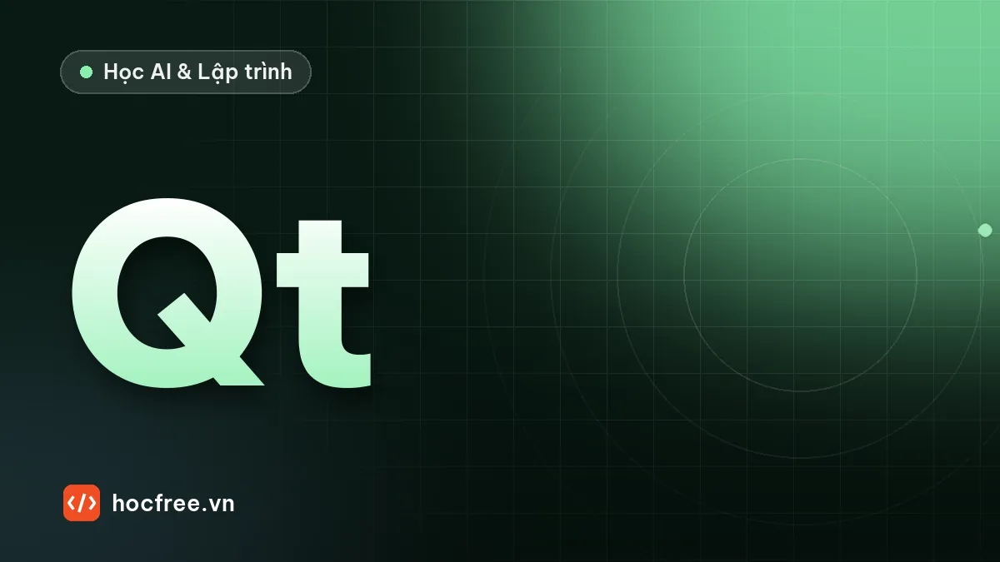

Giao diện vận hành trạm vision bằng PySide6: QThread, signal
Màn hình vận hành: ảnh trực tiếp, OK/NG, bộ đếm, chọn mã sản phẩm. Kiểm tra chạy trong QThread, giao diện nhận kết quả qua signal, dừng sạch, test offscreen.

Học xong bài này, bạn sẽ
- Chạy lõi kiểm tra trong QThread, giao diện nhận qua signal
- Đổi ảnh NumPy sang QImage đúng cách
- Khóa đổi mã sản phẩm khi chạy, ghi nhật ký
- Dừng luồng sạch và test offscreen
Nên học trước: Lưu kết quả và ảnh NG: SQLite, thư mục, dọn ổ đĩa
Nội dung bài viết
Trạm kiểm tra nào cũng cần một màn hình cho người vận hành: thấy ảnh đang chụp, kết quả OK/NG to và rõ, bộ đếm ca, chọn mã sản phẩm khi đổi hàng, bắt đầu và dừng, nhật ký sự kiện. Giao diện cũng là chỗ dễ làm hỏng trạm theo một cách rất cụ thể: vẽ ảnh, cập nhật bảng, phản hồi chuột đều tốn thời gian, và nếu chúng chạy chung luồng với phần kiểm tra thì một cú kéo cửa sổ hay một phiên remote desktop chậm cũng làm trạm trễ kết quả gửi PLC. Bài này xây một giao diện vận hành tối giản bằng PySide6 (Qt for Python) theo đúng nguyên tắc: kiểm tra chạy trong luồng riêng, giao diện chỉ nhận kết quả qua signal.
Cài: pip install PySide6 opencv-python numpy. Nên học trước: class và dataclass, luồng và hàng đợi.
1. Ba nguyên tắc
- Chỉ luồng giao diện được chạm vào widget. Qt không cho cập nhật
QLabel,QListWidget… từ luồng khác. Vi phạm thì chương trình có thể chạy được vài giờ rồi treo hoặc văng ngẫu nhiên, loại lỗi khó tìm nhất. - Luồng kiểm tra không phụ thuộc giao diện. Nó lấy ảnh, xử lý, gửi kết quả, ghi dữ liệu, rồi phát một signal mang ảnh và kết quả. Giao diện có kịp vẽ hay không không ảnh hưởng gì tới nó.
- Giao diện không chứa logic kiểm tra. Ngưỡng, số vật, công thức theo mã sản phẩm nằm trong cấu hình; giao diện chỉ chọn và hiển thị. Nhờ vậy cùng một lõi kiểm tra chạy được có giao diện, không giao diện (dịch vụ chạy nền), hoặc trong test.
Qt hiện thực nguyên tắc 1 và 2 rất gọn: đối tượng kiểm tra là một QObject được chuyển sang QThread bằng moveToThread. Khi nó phát signal, Qt thấy bên nhận (cửa sổ) sống ở luồng khác nên tự động xếp hàng lời gọi vào vòng sự kiện của luồng giao diện (queued connection). Không cần khóa, không cần tự viết hàng đợi.
2. Toàn bộ chương trình
File tram_gui.py dưới đây chạy được ngay bằng python tram_gui.py: camera giả 25 khung/giây tạo 6 vật tối trên nền sáng, khoảng 15% số khung thiếu một vật; lõi kiểm tra đếm vật theo công thức của mã sản phẩm đang chọn.
"""Giao diện vận hành tối giản cho một trạm kiểm tra: ảnh trực tiếp, kết quả, bộ đếm, chọn mã sản phẩm."""
import json
import sys
import time
from pathlib import Path
import cv2
import numpy as np
from PySide6.QtCore import QObject, Qt, QThread, QTimer, Signal, Slot
from PySide6.QtGui import QImage, QPixmap
from PySide6.QtWidgets import (QApplication, QComboBox, QGridLayout, QLabel, QListWidget, QMainWindow, QPushButton,
QWidget)
CONG_THUC = { # "recipe": tham số theo mã sản phẩm (thực tế đọc từ file JSON)
"SP-A (6 vật)": {"so_vat": 6, "nguong": 90},
"SP-B (4 vật)": {"so_vat": 4, "nguong": 90},
}
def anh_sang_qimage(anh):
"""numpy (H, W) uint8 hoặc (H, W, 3) BGR → QImage. .copy(): QImage không giữ mảng numpy, phải sao chép."""
if anh.ndim == 2:
h, w = anh.shape
return QImage(anh.data, w, h, w, QImage.Format.Format_Grayscale8).copy()
h, w, _ = anh.shape
return QImage(anh.data, w, h, 3 * w, QImage.Format.Format_BGR888).copy()
class LuongKiemTra(QObject):
"""Chạy trong QThread riêng: lấy ảnh, xử lý, phát kết quả qua signal. Không chạm vào widget nào."""
co_ket_qua = Signal(object, str, int, float) # ảnh BGR đã vẽ, "OK"/"NG", số vật, ms xử lý
bao_loi = Signal(str)
def __init__(self):
super().__init__()
self.cong_thuc = CONG_THUC["SP-A (6 vật)"]
self.dang_chay = False
self.rng = np.random.default_rng(0)
def chup(self):
"""Camera giả: 6 vật tối trên nền sáng, thỉnh thoảng thiếu một vật."""
anh = np.full((360, 640), 170, np.uint8)
so = 6 if self.rng.random() > 0.15 else 5
for k in range(so):
cv2.circle(anh, (70 + 100 * k, 180), 35, 40, -1)
return cv2.add(anh, self.rng.integers(0, 15, anh.shape, dtype=np.uint8))
@Slot()
def chay(self):
self.dang_chay = True
while self.dang_chay:
t = time.perf_counter()
try:
anh = self.chup()
_, bw = cv2.threshold(anh, self.cong_thuc["nguong"], 255, cv2.THRESH_BINARY_INV)
n, _, st, _ = cv2.connectedComponentsWithStats(bw)
so_vat = int((st[1:, cv2.CC_STAT_AREA] >= 500).sum())
kq = "OK" if so_vat == self.cong_thuc["so_vat"] else "NG"
ve = cv2.cvtColor(anh, cv2.COLOR_GRAY2BGR)
cv2.putText(ve, f"{kq} {so_vat} vat", (12, 40), cv2.FONT_HERSHEY_SIMPLEX, 1.2,
(0, 170, 0) if kq == "OK" else (0, 0, 220), 3)
self.co_ket_qua.emit(ve, kq, so_vat, 1000 * (time.perf_counter() - t))
except Exception as loi: # luồng không được chết (bài luồng và hàng đợi)
self.bao_loi.emit(f"{type(loi).__name__}: {loi}")
QThread.msleep(40) # camera giả 25 khung/giây
def dung(self):
self.dang_chay = False
class CuaSoTram(QMainWindow):
def __init__(self):
super().__init__()
self.setWindowTitle("Trạm ST3 – kiểm tra số vật")
self.anh = QLabel(alignment=Qt.AlignmentFlag.AlignCenter)
self.anh.setMinimumSize(640, 360)
self.ket_qua = QLabel("—", alignment=Qt.AlignmentFlag.AlignCenter)
self.ket_qua.setStyleSheet("font-size: 48px; font-weight: bold;")
self.dem = QLabel()
self.chon_sp = QComboBox()
self.chon_sp.addItems(CONG_THUC)
self.nut_chay, self.nut_dung = QPushButton("Bắt đầu"), QPushButton("Dừng")
self.nhat_ky = QListWidget()
luoi = QGridLayout()
luoi.addWidget(self.anh, 0, 0, 4, 1)
luoi.addWidget(self.ket_qua, 0, 1)
luoi.addWidget(self.dem, 1, 1)
luoi.addWidget(self.chon_sp, 2, 1)
luoi.addWidget(self.nut_chay, 3, 1)
luoi.addWidget(self.nut_dung, 4, 1)
luoi.addWidget(self.nhat_ky, 4, 0)
khung = QWidget()
khung.setLayout(luoi)
self.setCentralWidget(khung)
self.so = {"OK": 0, "NG": 0}
self.so_khung_hien = 0
self.luong = QThread()
self.kiem_tra = LuongKiemTra()
self.kiem_tra.moveToThread(self.luong) # đối tượng sống trong luồng phụ
self.luong.started.connect(self.kiem_tra.chay)
self.kiem_tra.co_ket_qua.connect(self.nhan_ket_qua) # signal qua luồng: Qt tự xếp hàng về luồng giao diện
self.kiem_tra.bao_loi.connect(lambda s: self.ghi(f"LỖI {s}"))
self.nut_chay.clicked.connect(self.bat_dau)
self.nut_dung.clicked.connect(self.dung)
self.chon_sp.currentTextChanged.connect(self.doi_san_pham)
self.cap_nhat_dem()
def ghi(self, dong):
self.nhat_ky.insertItem(0, time.strftime("%H:%M:%S ") + dong)
def cap_nhat_dem(self):
tong = self.so["OK"] + self.so["NG"]
self.dem.setText(f"Tổng {tong} | OK {self.so['OK']} | NG {self.so['NG']}")
@Slot(object, str, int, float)
def nhan_ket_qua(self, ve, kq, so_vat, ms): # chạy trong luồng giao diện: được phép chạm widget
self.so[kq] += 1
self.so_khung_hien += 1
self.anh.setPixmap(QPixmap.fromImage(anh_sang_qimage(ve)))
self.ket_qua.setText(kq)
self.ket_qua.setStyleSheet(f"font-size: 48px; font-weight: bold; color: {'green' if kq == 'OK' else 'red'};")
self.cap_nhat_dem()
if kq == "NG":
self.ghi(f"NG: {so_vat} vật ({ms:.1f} ms)")
def bat_dau(self):
if not self.luong.isRunning():
self.chon_sp.setEnabled(False) # không đổi mã sản phẩm khi đang chạy
self.luong.start()
self.ghi(f"Bắt đầu, mã {self.chon_sp.currentText()}")
def dung(self):
if self.luong.isRunning():
self.kiem_tra.dung()
self.luong.quit()
self.luong.wait(2000)
self.chon_sp.setEnabled(True)
self.ghi("Dừng")
def doi_san_pham(self, ten):
self.kiem_tra.cong_thuc = CONG_THUC[ten]
self.ghi(f"Đổi mã sản phẩm: {ten} {json.dumps(CONG_THUC[ten])}")
def closeEvent(self, su_kien):
self.dung() # đóng cửa sổ thì dừng luồng sạch sẽ
su_kien.accept()
if __name__ == "__main__":
app = QApplication(sys.argv)
cua_so = CuaSoTram()
cua_so.show()
if "--thu" in sys.argv: # chạy thử tự động: bấm Bắt đầu, 3 giây sau chụp màn hình rồi thoát
QTimer.singleShot(100, cua_so.nut_chay.click)
def ket_thuc():
cua_so.grab().save("man_hinh.png")
print(f"đã hiển thị {cua_so.so_khung_hien} khung; {cua_so.dem.text()}; "
f"luồng kiểm tra đang chạy: {cua_so.luong.isRunning()}")
cua_so.close()
print(f"sau khi đóng: luồng kiểm tra đang chạy: {cua_so.luong.isRunning()}")
app.quit()
QTimer.singleShot(3100, ket_thuc)
sys.exit(app.exec())Những chỗ đáng đọc kỹ:
anh_sang_qimagegọi.copy():QImagetạo từanh.datachỉ trỏ vào bộ nhớ của mảng NumPy; khi mảng bị giải phóng, ảnh hiển thị thành rác hoặc chương trình văng. Tham số thứ tư là số byte mỗi dòng (3 * wvới ảnh BGR); sai số này thì ảnh bị xiên.- Signal
co_ket_quakhai báo kiểuobjectcho ảnh nên mảng NumPy được truyền nguyên vẹn qua luồng. Luồng kiểm tra tạo mảng mới mỗi khung, vì vậy không có chuyện hai luồng cùng sửa một mảng. - Vòng lặp kiểm tra bọc từng khung trong
try/exceptvà phát signalbao_loi: luồng không được chết lặng lẽ (bài luồng và hàng đợi). - Không cho đổi mã sản phẩm khi đang chạy (
setEnabled(False)); khi đổi thì ghi nhật ký kèm công thức. Chọn sai mã là một nguyên nhân NG hàng loạt rất hay gặp, và nhật ký là thứ đầu tiên cần xem khi điều tra. closeEventdừng luồng rồi mới đóng: đóng cửa sổ khi luồng vẫn chạy thì tiến trình không thoát, hoặc thoát khi luồng đang ghi dở dữ liệu.
3. Chạy thử tự động, không cần màn hình
Tham số --thu bấm "Bắt đầu" bằng code, đợi 3 giây, chụp cửa sổ ra man_hinh.png, in bộ đếm, rồi đóng cửa sổ. Biến môi trường QT_QPA_PLATFORM=offscreen cho Qt vẽ vào bộ nhớ thay vì màn hình, nên chạy được trên máy chủ build, trong CI, hoặc qua SSH.
$ QT_QPA_PLATFORM=offscreen python tram_gui.py --thu
đã hiển thị 61 khung; Tổng 61 | OK 43 | NG 18; luồng kiểm tra đang chạy: True
sau khi đóng: luồng kiểm tra đang chạy: FalseTrên Windows PowerShell: $env:QT_QPA_PLATFORM="offscreen"; python tram_gui.py --thu. Trong 3 giây giao diện nhận và vẽ khoảng 60 khung, khớp tốc độ 25 khung/giây của camera giả, và luồng kiểm tra dừng sạch khi đóng cửa sổ. Tỉ lệ NG 18/61 cao hơn 15% chỉ vì mẫu ngắn; chạy riêng bộ tạo ảnh 200 khung với cùng hạt giống cho 31 khung thiếu vật và đúng 31 khung NG, tức lõi kiểm tra không báo nhầm. Ảnh chụp ở chế độ offscreen có thể hiện chữ thành ô vuông vì không nạp font hệ thống; bố cục và ảnh vẫn đúng. Cách chạy này cũng là khung cho test giao diện: dùng QTimer bấm nút, đổi mã sản phẩm, rồi kiểm tra trạng thái widget (thư viện pytest-qt làm việc này gọn hơn; xem bài pytest).
4. Lỗi thường gặp
| Triệu chứng | Nguyên nhân | Cách sửa |
|---|---|---|
| Văng hoặc treo ngẫu nhiên sau vài giờ | Cập nhật widget từ luồng kiểm tra | Mọi cập nhật hiển thị đi qua signal |
| Ảnh bị xiên, sọc, sai màu | Sai số byte mỗi dòng, nhầm RGB/BGR, hoặc thiếu .copy() | Dùng hàm anh_sang_qimage ở trên; ảnh màu OpenCV là BGR |
| Giao diện đơ khi bấm nút | Làm việc nặng (lưu ảnh, gọi PLC, chờ mạng) trong slot của luồng giao diện | Đẩy việc nặng sang luồng khác; slot chỉ cập nhật hiển thị |
| Chậm dần, RAM tăng theo ca | Nhật ký thêm dòng mãi mãi; giữ tham chiếu tới mọi ảnh | Giới hạn số dòng nhật ký, chỉ giữ ảnh đang hiển thị |
| Remote desktop làm trạm chậm | Vẽ 25 khung/giây ảnh lớn qua mạng | Thu nhỏ ảnh hiển thị, giới hạn tốc độ vẽ (bài tập 2) |
| Không thoát được chương trình | Luồng còn chạy khi đóng cửa sổ | closeEvent dừng luồng, wait có thời hạn |
Tóm tắt
- Lõi kiểm tra chạy trong
QThread(moveToThread) và phát signal mang ảnh, kết quả; chỉ luồng giao diện chạm vào widget. - Đổi ảnh NumPy sang
QImagevới đúng số byte mỗi dòng, đúng định dạng, và.copy(). - Logic và công thức theo mã sản phẩm nằm ngoài giao diện; khóa đổi mã khi đang chạy; ghi nhật ký mọi thao tác.
- Dừng luồng sạch khi đóng; chạy thử tự động bằng
QTimervàQT_QPA_PLATFORM=offscreen.
Bài tập
Bài 1. Hiển thị thời gian xử lý
Thêm một nhãn hiển thị thời gian xử lý trung bình của 50 khung gần nhất và tô đỏ khi vượt 20 ms.
Xem đáp án
Trong CuaSoTram.__init__ tạo self.thoi_gian = collections.deque(maxlen=50) (thêm import collections), một self.nhan_ms = QLabel() và đặt vào lưới, ví dụ luoi.addWidget(self.nhan_ms, 5, 1). Trong nhan_ket_qua, vốn đã nhận sẵn ms:
# (minh họa) thêm vào cuối CuaSoTram.nhan_ket_qua
self.thoi_gian.append(ms)
tb = sum(self.thoi_gian) / len(self.thoi_gian)
self.nhan_ms.setText(f"Xử lý trung bình: {tb:.1f} ms")
self.nhan_ms.setStyleSheet("color: red;" if tb > 20 else "")Thời gian phải được đo trong luồng kiểm tra (đã làm trong chay) rồi gửi sang, không đo trong luồng giao diện: thời điểm signal tới giao diện còn cộng thêm độ trễ xếp hàng.
Bài 2. Giới hạn tốc độ vẽ
Camera chạy 25 khung/giây nhưng người vận hành chỉ cần thấy khoảng 10 khung/giây. Sửa sao cho bộ đếm vẫn đủ mọi khung, ảnh chỉ được vẽ lại tối đa 10 lần mỗi giây, nhưng khung NG thì luôn được vẽ.
Xem đáp án
# (minh họa) trong CuaSoTram.nhan_ket_qua, thay dòng self.anh.setPixmap(...)
bay_gio = time.perf_counter()
if kq == "NG" or bay_gio - getattr(self, "lan_ve_cuoi", 0.0) >= 0.1:
self.anh.setPixmap(QPixmap.fromImage(anh_sang_qimage(ve)))
self.lan_ve_cuoi = bay_gioBộ đếm và nhật ký vẫn cập nhật mỗi khung; chỉ phần tốn kém nhất (đổi ảnh và vẽ) bị giới hạn. Tốt hơn nữa là luồng kiểm tra gửi ảnh đã thu nhỏ, giảm cả chi phí truyền ảnh lớn qua signal.
Bài 3. Đọc công thức từ file
Chuyển CONG_THUC ra file cong_thuc.json, nạp khi khởi động, và từ chối khởi động (hiện hộp thoại lỗi) nếu một công thức thiếu khóa so_vat hoặc nguong.
Xem đáp án
# (minh họa)
from PySide6.QtWidgets import QMessageBox
def nap_cong_thuc(duong_dan="cong_thuc.json"):
ct = json.loads(Path(duong_dan).read_text(encoding="utf-8"))
for ten, gia_tri in ct.items():
thieu = {"so_vat", "nguong"} - set(gia_tri)
if thieu:
raise ValueError(f"công thức {ten} thiếu {sorted(thieu)}")
return ct
# trong khối __main__, trước khi tạo CuaSoTram:
try:
CONG_THUC = nap_cong_thuc()
except (OSError, ValueError) as loi:
QMessageBox.critical(None, "Lỗi công thức", str(loi))
sys.exit(1)Kiểm tra cấu hình ngay khi khởi động tốt hơn nhiều so với phát hiện lỗi giữa ca. Hàm nap_cong_thuc không đụng tới Qt nên test được bằng pytest với tmp_path.
Bài tiếp theo: Dự án chặng 10: trạm vision hoàn chỉnh với PLC mô phỏng. Hãy gắn giao diện này vào trạm của dự án.
Nguồn tham khảo: Qt for Python (PySide6) documentation, Qt: Threads and QObjects, Qt: QImage, Qt for Python: Licenses.
Bài tập thực hành
- C
- h
- ạ
- y
- t
- r
- a
- m
- _
- g
- u
- i
- .
- p
- y
- ,
- t
- h
- ê
- m
- n
- h
- ã
- n
- t
- h
- ờ
- i
- g
- i
- a
- n
- x
- ử
- l
- ý
- ,
- g
- i
- ớ
- i
- h
- ạ
- n
- t
- ố
- c
- đ
- ộ
- v
- ẽ
- v
- à
- n
- ạ
- p
- c
- ô
- n
- g
- t
- h
- ứ
- c
- t
- ừ
- f
- i
- l
- e
- J
- S
- O
- N
Làm xong bài tập mới chuyển sang bài tiếp theo: tự viết code là cách duy nhất để nhớ lâu.